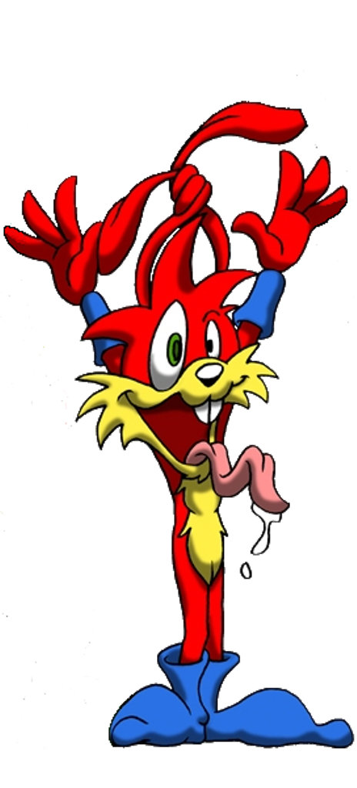

Opis postaci
Spazz Jackrabbit jest bratem Jazza. Pojawił się po raz pierwszy w części drugiej. Jest obok Jazza drugą grywalną postacią w podstawowej wersji gry. Jego umiejętnością jest podwójny skok. W odróżnieniu od swojego rodzeństwa nie potrafi zrobić "helikopterka" z uszów.